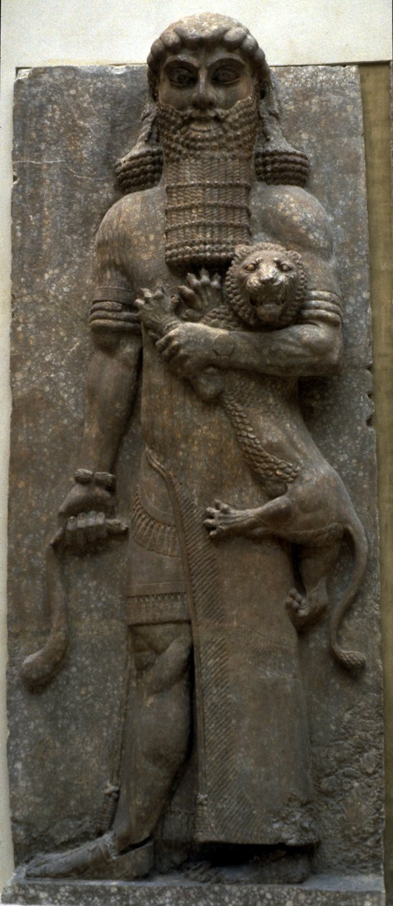

TWO-THIRDS DIVINE
Two-thirds god because the story says so — and the story is load-bearing.

TWO-THIRDS DIVINE
Two-thirds god because the story says so — and the story is load-bearing.
Feature map
Level-by-level features, as the figure refined them.
Prototype's Edge
Cost: 1 CE · Bonus action: conjure.
Tier V cursed technique · Suggested CE ability: CHA · Combat role: tyrant striker The technique manifests as seniority made physical: his conjured weapons are the divine prototypes — the first axe, the first sword, the first spear — rendered in bronze-gold light that hurts to look at directly. They are not many. There is exactly one of each, and they are his because the story says the king holds the originals. Prototypes & seniority: when a prototype weapon clashes with, or is directly opposed by, a manufactured weapon or a technique-derived arm (a conjured blade, a shikigami's fang, a cursed tool's edge — anything derived), the prototype is senior: Gilgamesh has advantage on the clash or contest, and his strikes deal +PB damage against the wielder. Seniority never negates (no nullification) — it outranks. Whenever a feature calls for a prototype weapon attack and he has none conjured, he may conjure one as part of that feature's activation (paying Prototype's Edge's 1 CE additionally). Divine damage: damage dealt by prototypes is radiant and ignores resistance (not immunity).
Conjure a divine-prototype melee weapon — axe, sword, or spear, your choice (damage as the mundane equivalent). It counts as magical, deals +PB radiant damage on a hit, and vanishes if it leaves your hand. Lasts 1 minute. The first axe. All axes since have been commentary.
The Bull of Heaven
Cost: 4 CE · Action: the charge.
Move up to your speed in a straight line, passing through hostile creatures' spaces. Each creature whose space you enter makes a STR save vs your technique save DC or takes 3d10 + STR bludgeoning damage and is knocked prone (half damage on a success, no prone). End adjacent to one creature whose space you entered and make a prototype weapon attack against it with advantage. The Bull came from the sky. The king went to meet it. The sky lost.
Two-Thirds
Passive:
Passive: the god/man split, mechanized. - Divine Majority: once per turn, when you would take damage, reduce it by PB + CHA modifier before it is applied (the god endures). - Mortal Third: when you are below half HP, your prototype strikes deal additional PB damage (the man fights harder dying — the Epic's pathos, weaponized). - Your prototypes ignore resistance to the damage they deal (not immunity). Two-thirds of him cannot be killed. The third that can is the reason he bothers.
The First King
Cost: 5 CE · Reaction · PB times per long rest.
When a creature within 60 ft uses a named technique feature you have observed this encounter, answer with the prototype: make a prototype weapon attack against them. If it hits, the feature's damage is halved until the end of their next turn — durations halved (minimum 1 round); conditions and movement penalties apply at half potency, rounded down (invented clarification) — the original disciplines the copy. (It is not cancelled. Heaven does not un-throw what was thrown; the king merely reminds the copy of its place.) Every technique in the world is descended from something. He is the something.
The Epic Itself
Cost: 8 CE · Bonus action: invoke · Duration: 1 minute.
His legend becomes armor — the retelling-shield: once per round, when he would take damage, the story asserts that he endures — reduce the damage by 2d10 + CHA modifier before it is applied. While invoked, his prototype strikes deal double their bonus radiant damage (all PB-sourced radiant bonuses — base, Mortal Third, EAT — are doubled). The story says he endures. The story is load-bearing.
Maximum, Domain, or equivalent.
Capstone material.
"URUK, THE FIRST CITY"
The barrier is Uruk at its height — the great walls on the horizon, the Eanna precinct blazing, the air thick with four thousand years of being the city. Sure-hit: every prototype he has ever owned strikes at once. At initiative 20, the volley falls: each hostile creature in the Domain is attacked by a spectral prototype (+PB + CHA to hit vs AC; 2d8 + PB radiant damage, ignores resistance). The walls of Uruk ring the barrier: hostile creatures treat the Domain as difficult terrain — the city resists invaders. The first city. All cities since have been suburbs.
- Clash points
- 1000
- Burnout
- 3 rounds
- Duration
- 3 minutes
- Radius
- 60 ft
- Activation ✦
- full-turn action
- CE cost ✦
- 20
✦ Canon: figure Domains are Specific Domains — the stated profile governs, not the player point-unlock table.
The Plant of Heartbeat
The choice (capstone): at L20, the quest ends — one way or the other. Choose: - EAT: He finally eats the Plant. He becomes fully divine: Divine Majority reduction doubles, and his prototypes' bonus radiant damage becomes +2×PB (replacing the base +PB; Mortal Third's additional +PB still applies separately). But the Epic ends — the story of the mortal king is over, and a god has no story: if he dies now, he dies forever (no retelling renewal). - REFUSE: He honors the Epic's ending — the mourner endures. Once per long rest, when reduced to 0 HP, he stands at 1 HP instead, and the story continues (narrative immortality, witnessed). The one-third man, it turns out, was the strongest part all along. The serpent stole the plant. Forty-seven centuries later, the king gets to decide what that meant.
Build-defining options.
This technique grants Innate Technique Feats — hand-authored applications of the figure's art, available in the builder's feat picker when you select this technique.
Edge cases and shared systems.
Campaign canon notes